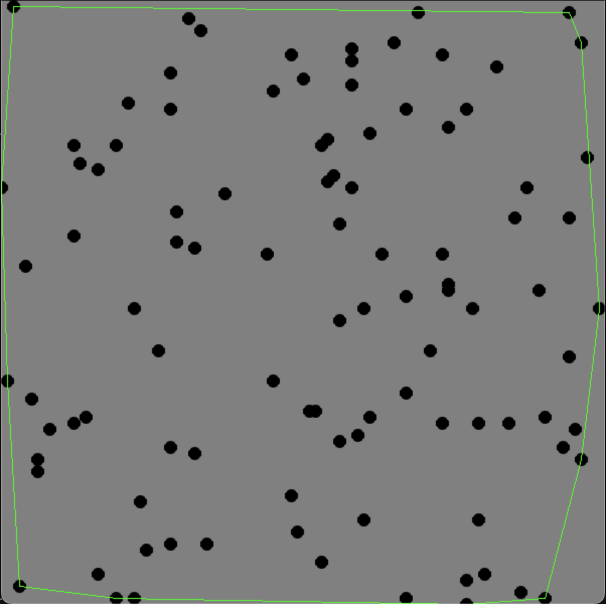

Technical Projects
This page highlights projects that focus on technical and programming-based solutions. Some projects also feature visual elements for interactive and engaging user experiences.
Projects
1. Sand Game - Python
An interactive game created with Python that simulates the realistic movement of particles and includes various game modes:
- Sand Mode: Sand flows naturally, piling up at the bottom or over other sand.
- Floor Mode: Draw floors that sand can flow over.
- Destroy Mode: Fireballs appear, burning everything in their path.
Here’s a preview of the game in action:
2. Gray-Scale Topographic Map of Colorado
This project uses Python to generate a gray-scale topographic map of Colorado based on 425,000 elevation points:
- Light Pixels: Represent higher elevations.
- Darker Pixels: Represent lower elevations.
- Interactive Feature: Displays the elevation at any point when clicked.
Check out a preview of the map:
3. Distributed Blockchain Network
A blockchain network implemented in Java featuring:
- Cryptographic hashing and proof-of-work mining.
- A peer-to-peer distributed system with multithreaded node communication.
- Efficient block validation and propagation across the network.
4. Convex Hull Algorithms: Brute Force and QuickHull
Implemented two convex hull algorithms in Python to compare performance and visualize results:
- Brute Force: Simple, exhaustive approach with O(n³) complexity.
- QuickHull: Efficient divide-and-conquer algorithm with O(n log n) complexity.
- Visualization: Displays the computed convex hull on a canvas for validation.
- Runtime Comparison: Compares algorithm performance over increasing dataset sizes.
Here is an example of the output:
